| 日付 | 2020年8月15日（土） |
|---|---|
| 山域 | 浅間周辺 |
| メンバー | 家族（妻、長女・9歳、長男・7歳） |
| 山行形態 | 子連れ日帰り |
| アクセス | 車 |
| ルート (Map) | 車坂峠 (8:39) - (9:41) 槍ヶ鞘 - (9:52) トーミの頭 - (10:12) 黒斑山 (10:27) - (10:53) 蛇骨岳 (10:59) - (11:12) 仙人岳 - (11:34) Jバンド - (11:39) 鋸岳 (11:44) - (11:48) Jバンド - (12:28) 前掛山分岐 - (12:43) 湯ノ平分岐 - (13:39) トーミの頭 - (13:47) 中コース分岐 - (14:40) 車坂峠 |
今週末は久々に土日とも予定がない。
土日に出かけるか、土曜のみにするか、天気予報とにらめっこしながら決める。
結局、日曜の天気が読み切れず、土曜のみの日帰り登山。
行先は13年振りの黒斑山。今回は外輪山から一旦下に降りて湯ノ平を歩く予定だ。
車坂峠に到着。標高1970m。
公衆トイレが閉鎖されていて、高峰高原ホテルのトイレを利用させていただく。
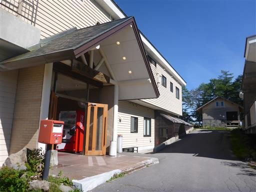
ホテル前から景色を眺める。
遠くに富士山の頭がくっきりと見えている。今日は非常に空気が澄んでいる。
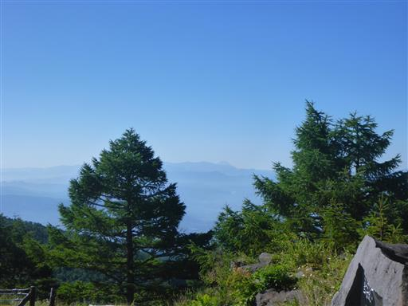
こちらは八ヶ岳。
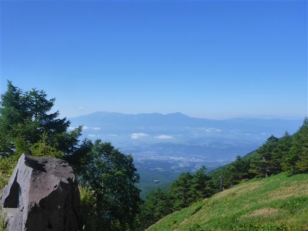
車坂峠の標識。ここから登山を開始する。

マツムシソウが咲いている。
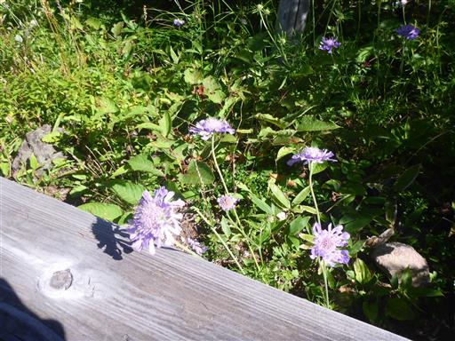
キオン。
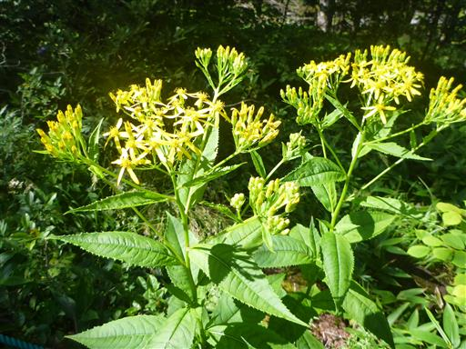
ヒメシャジンだろうか？群生している。
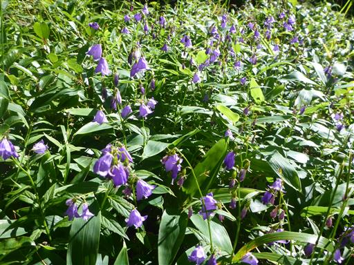
タムラソウとヒョウモンチョウ。
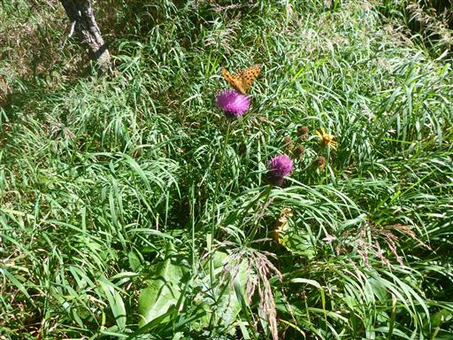
明るい針葉樹林の森を歩いていく。
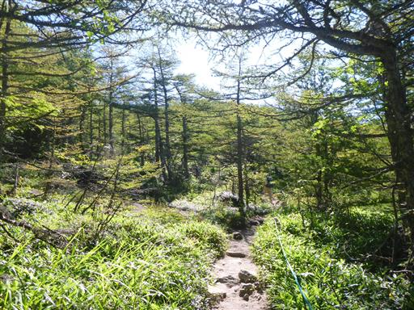
道は途中で少しだけ下る。それだけで子供たちは文句を言っている。
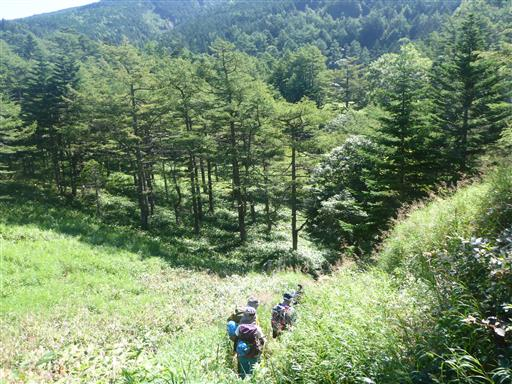
その後は再び登り。今日は登山者の数が多く、絶えず人が見えている。
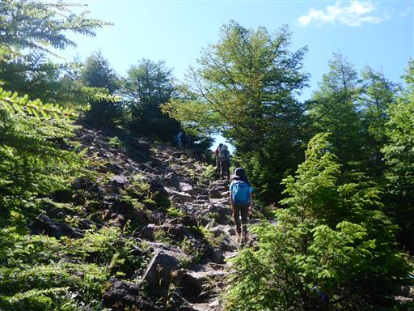
登山道の木の階段が脇にたくさん置かれている。
邪魔なので撤去したのだろうか？
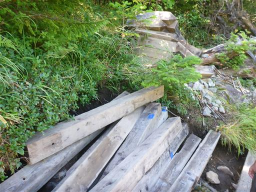
浅間山の頭が姿を現す。下から雲が沸き上がっている。
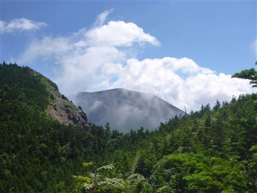
槍ヶ鞘に到着。浅間山の全体像が見える。
とにかく存在感のある大きな山だ。
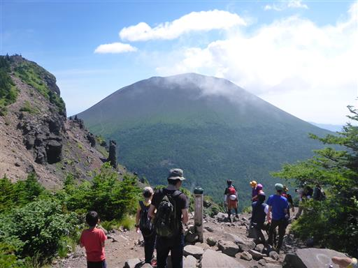
ここからは浅間山の外輪山を歩いていく。
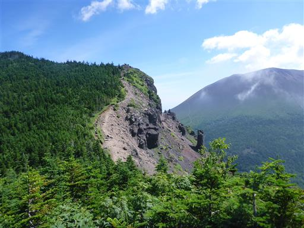
巨大な岩が突き立っている。火道跡なのだろうか？
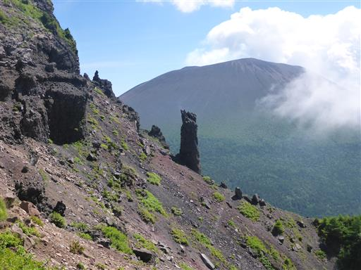
トーミの頭目指してさらに登る。
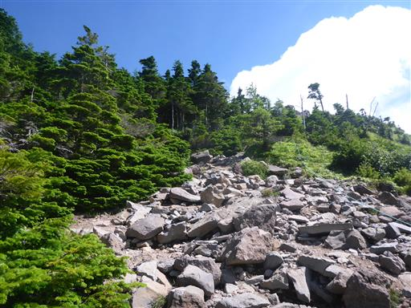
トーミの頭に到着。
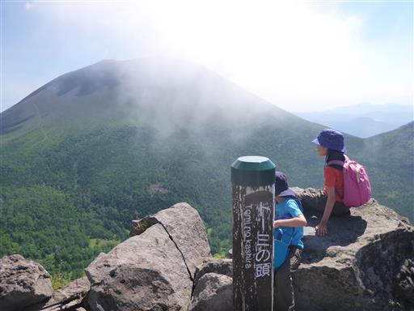
岩に腰掛け休憩。背景は剣ヶ峰だ。
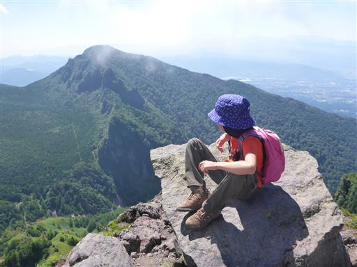
浅間山の外輪山の最高峰・黒斑山とそこから伸びる尾根を望む。
かつてはここに火山があったが、山体崩壊を起こし、残ったのがこの外輪山。
そこから少し東側で噴火を起こしたのが現在の浅間山だ。
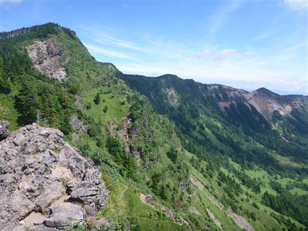
眼下には美しい緑のじゅうたんが広がっている。
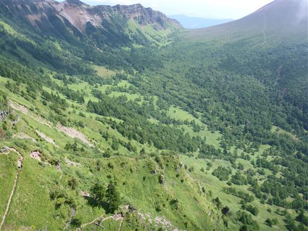
崖の縁にハクサンオミナエシが咲いている。
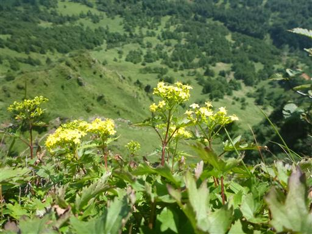
ウスユキソウ。
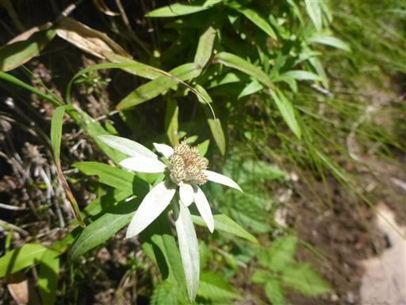
イワインチン。
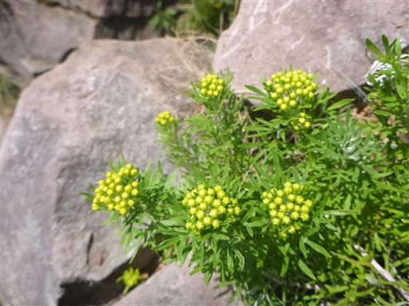
トーミの頭から一登りで黒斑山に到着する。標高2404m。
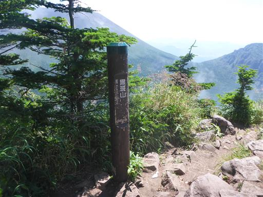
目の前に聳えるのはもちろん巨大な浅間山。
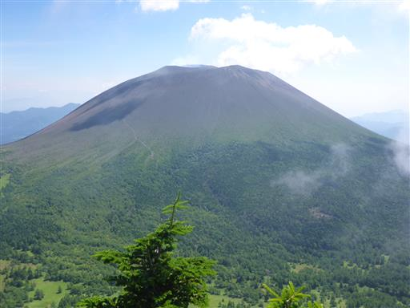
まだ富士山の姿が見える。その手前に無数の山々が折り重なっている。
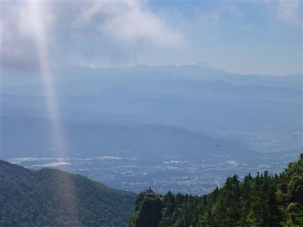
左の方の特徴的な山は妙義山。
こちらも多くの山々が折り重なって見える。
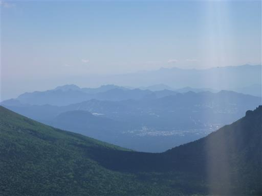
長く伸びる外輪山。これから辿る尾根だ。

先ほど歩いたトーミの頭。ものすごい崖の上に人が立っている。
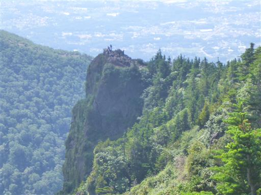
浅間山はわずかに噴煙を上げている。
今年に入って噴火警戒レベルが1から2に上がったので、再び浅間山には登れなくなってしまった。
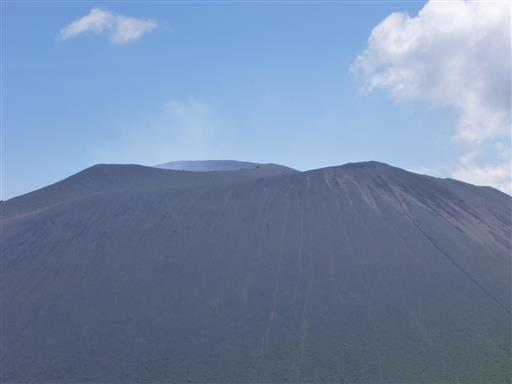
前回は黒斑山への往復登山だったので、ここからは未知の領域。
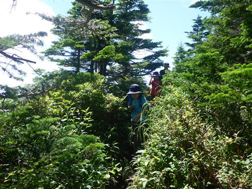
一旦樹林帯の中に入り展望はなくなる。
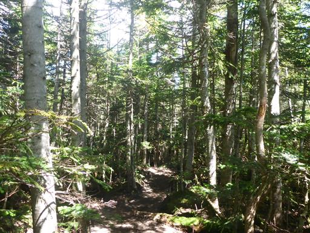
群生して咲くオンタデ。
あまり誰からも注目されない花だ。
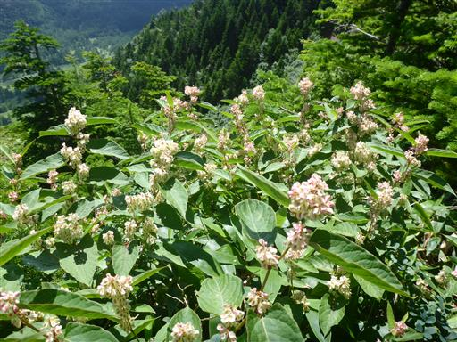
ヤマハハコ。
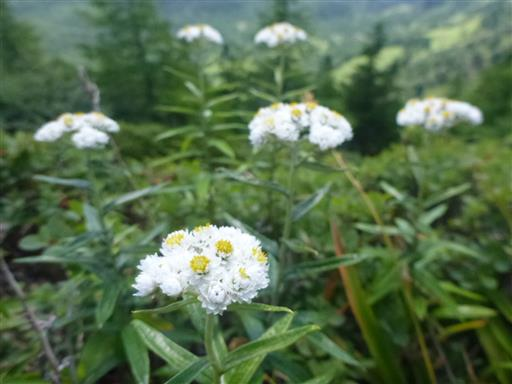
展望の良い道に出てくる。浅間山を眺めながら歩いていく。
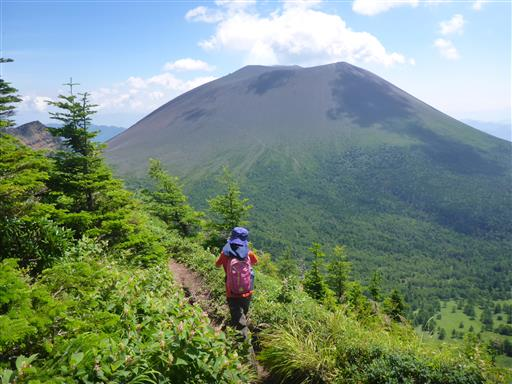
右側は崖。そしてその下には美しい緑の笹原が広がる。
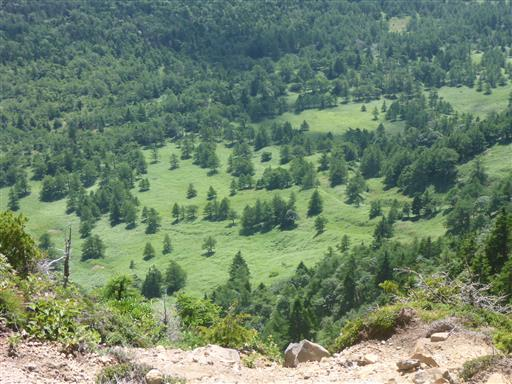
この辺りも陽の光を浴びて緑色が美しい。
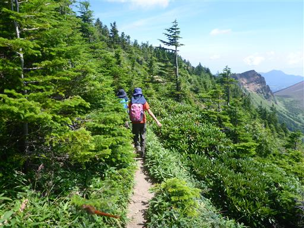
振り返って黒斑山を望む。だいぶ下ってきた。
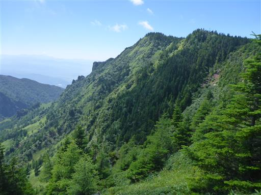
少々笹が鬱陶しい場所がある。
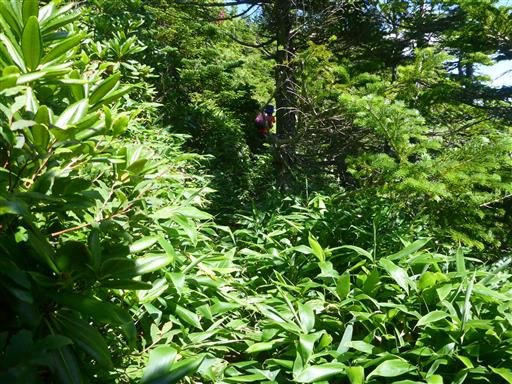
再び展望の良い道に出てくる。
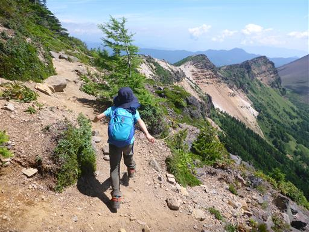
斜面を埋め尽くすこの植物は何だろう？葉だけではさっぱり分からない。
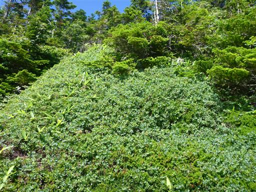
蛇骨岳に到着。標高2366m。
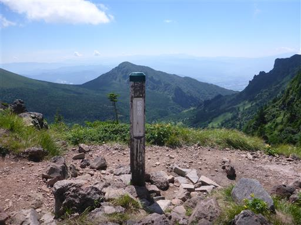
息子は早速、山頂にある岩によじ登っている。
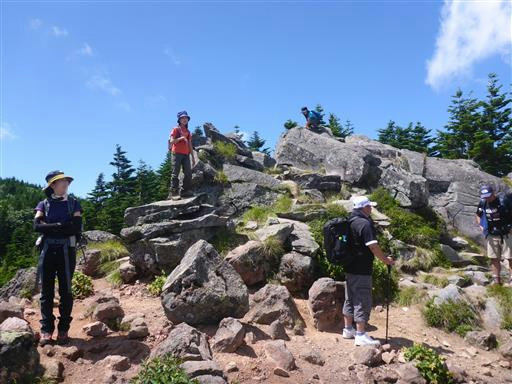
岩の上からは展望が良い。
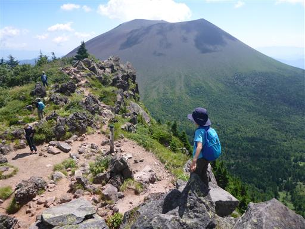
北方には嬬恋村の田園風景が広がる。
左手に見えるのは四阿山。右奥の山々は志賀高原で
昨年訪れた笠ヶ岳や横手山など懐かしい山が見えている。
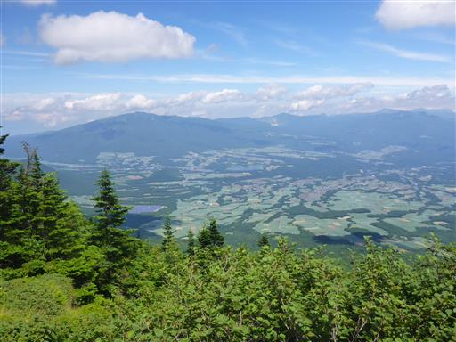
ここから先は尾根の向きが変わって、浅間山に向かって歩くことになる。
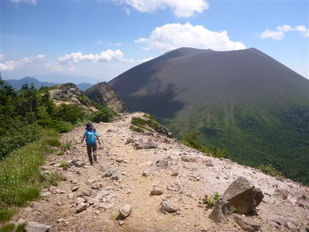
眼下の湯ノ平に湿原が見える。残念ながら登山道は湿原を通っていない。
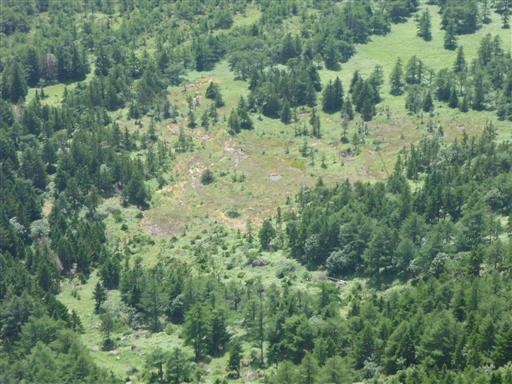
素晴らしい景色に見とれる。
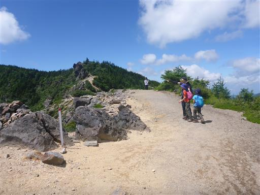
白ゾレを通過。この辺りはガレ場で足元に気を付ける必要がある。
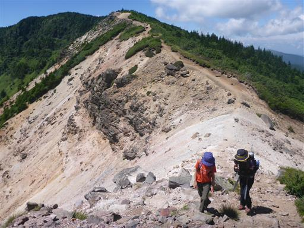
遥か下方まで急斜面が続いている。
足を滑らせたら止めることはできなさそうだ。
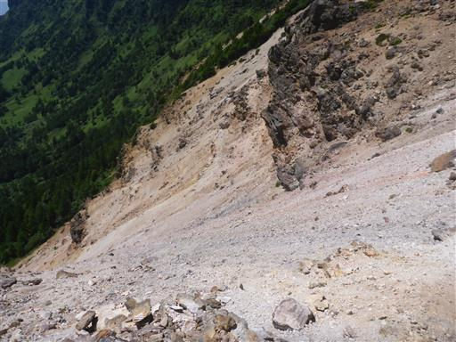
浅間山の左手に、浅間山の東の方の山々も見えてくる。
左の山は浅間隠山、右の三角形は角落山だ。
真ん中の遠くに見えるのは榛名山の辺りだろう。
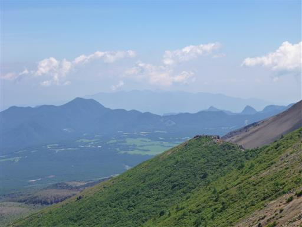
仙人岳に到着。
しばし景色を眺める。正面に見えるのは剣ヶ峰だ。
黒斑山から続く外輪山。この尾根をここまで辿ってきた。
緑色の斜面が美しい。
浅間山がどんどん近くなって、どんどん大きくなってくる。
この辺りは岩場が多い。簡単な岩場だが慎重に歩く。
登山道は少々錯綜しているが、息子はいつも尾根上の岩道を歩いている。
尾根はこのまま浅間山の麓まで標高を下げて行っている。
浅間山はもう写真に収まりきらないほど大きい。
岩だらけの地形。遮るものがなく展望は抜群だ。
Jバンドに到着。ここから湯ノ平に下降する。
尾根先端の鋸岳はこの先にあるので、一人往復することにする。
この辺りは地面が赤い。
鋸岳に到着。標高2254m。
浅間山から流れ出た溶岩流の跡が見える。鬼押出しの辺りだろうか？
Jバンドに戻ってくる。2度目の軽い昼食をとる。
昼食をとっていると美しい虫がやって来る。色違いの2匹だ。
休憩を終えたら出発。湯ノ平に向けて急斜面の崖を下って行く。
息子はまだこのような道が苦手で苦戦している。
見上げると、まるで岩の障壁のようだ。
周囲には色とりどりの花が咲いている。
展望も素晴らしいが、花も素晴らしい。
三段の岩。長い年月の地層が良く見える。
湯ノ平に降り立つ。
浅間山を見上げる。こちらから見ると平べったい形だ。

外輪山を見上げる。どこもかしこも素晴らしい景色だ。
噴石が点在している。噴火してこんな岩が落ちてきたらひとたまりもない。
落ちている岩に登って少し遊ぶ。息子は上手く登れず不機嫌だ。
辺りは幼木が多い。火山独特の風景だ。
しばらく歩くと樹林帯の中に入る。植生がガラッと変わる。
浅間山（前掛山）登山口に到着。
現在は噴火警戒レベル2なので、立入禁止になっている。
蛾を発見。夜行性なのかつついてもあまり動かない。
分岐点に到着。ここから再び稜線まで登り上げる。
この辺りはマルバダケブキが群生している。大柄な花だ。
谷を通過。この辺りは少々硫黄のにおいがする。

美しい笹原。尾根から見えていた美しい緑のじゅうたんは、この笹原だろう。
左手に見える岩がトーミの頭。いまからあそこまで登る必要がある。
猛暑の中、ジグザグ道を登って行く。
山行終盤の本格的な登りで、暑い中登るのは苦しい。
標高を上げると、少しずつ浅間山の見え方が変わってくる。
突き立つ岩が間近に迫ってくる。
トリカブトの花が咲いている。
イブキジャコウソウ。
ハクサンフウロ。
シモツケソウ。
トモエシオガマ。手裏剣のような形で特徴的な花だ。
ウメバチソウ。
多くの花々に癒されながら登って行く。
再び稜線に到着。疲れ果てたが、あとは下るのみだ。
帰りは中コースを下る。こちらは樹林帯の中の道だ。
陽の光を浴びて苔が美しく光っている。
登山道が大きく掘られていて、その側に踏み跡がついている。
踏み跡は狭くてかなり歩きにくい。
イチヤクソウ。花はもう終わりかけだ。
キバナノヤマオダマキ。
こちらはまだ美しい花を咲かせている。
アップダウンのない緩やかな道を下って行き、駐車場に到着する。
黒斑山は変化に富んだ景色、美しい花々が楽しめる素晴らしい山だった。
何度でも来たいと思わせられるコースであり、本当に久々に大展望の山行を楽しめた。